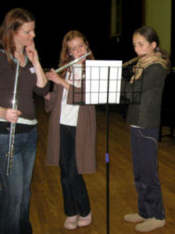
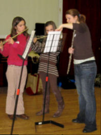

|  | Tracy teaches individual flute, clarinet and saxophone lessons to children of all ages in schools throughout South-East London and Kent. She also teaches a number of private pupils, from children through to adults of varying abilities. In addition, Tracy coaches ensembles at 'City Flute Days' in London, Oxford and Bristol. She works with flautists Claire Overbury and Ruth Sutherland, and pianist Elspeth Wyllie, to provide a fun and educational day covering all aspects of flute playing and performance.As part of the government's Wider Opportunities scheme to bring music into primary schools, Tracy introduces groups of Year 3 children to the enriching world of music. The children enjoy learning the basics of music and are given the opportunity to play various instruments to aid them in choosing one to study in Year 4.Tracy’s 'Woodwind Workshops' target older children throughout South-East London, many of whom already play an instrument. The workshop introduces them to the full range of woodwind instruments within the flute, clarinet and saxophone families. Her aim is to get these children enthused about music and inspire them to keep practising and even take up other instruments.Tracy is passionate about bringing music into schools to encourage children to learn an instrument and developing the musical education of young musicians. |